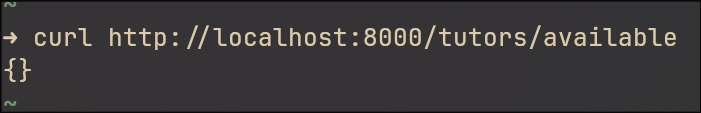
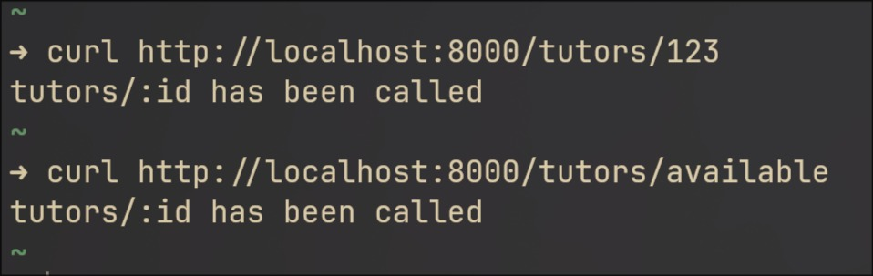

A subtle code placement bug that revealed an important detail about Backend frameworks
A Class booking application, using next.js and express.js. No seeming issues. Except one lurked by, waiting to be noticed. After signing in, a student couldn't see his class bookings. This hence led us to track the culprit and revealed a more fundamental code placement guideline to be followed in express.js and similar Backend frameworks.
The code had a simple Backend server using Express.JS. We had endpoints set up like this (in the main server.js file).
// many more endpoints before this ...
// endpoint of interest
app.get("tutors/available", (req, res) => {
// logic
// return a nested json with name and ID of every available tutor
})
//many more endpoints after ...Two things to keep in mind as a precursor. We had the /tutors/:id endpoint to get detail about a particular tutor in our app and the tutors/available/ to get a list of all the available tutor's at a particular instant (we were managing the logic of a tutor being available and booked). There were many more endpoints, but these two are the pivotal characters of this story.
So, everything seems normal right? That's what we thought too. We did some testing using Curl here and there but nothing major (since we were just in the initial building stage) and did not catch anything then.
So we went ahead and integrated these endpoints into our Front end and tried working everything.
But we ran into an issue in our Front end, We wanted to display all the available tutors on a page on our Front end, so we made a call to our tutors/available endpoint. But we got a data format mismatch error (The data returned by our Backend and the data receiving and handling in out Front end were not in the same format). We tried different error handling, made sure the JSON format matched, etc. But nothing no fix to the Front end seemed to work.
Here is when we decided to curl the available endpoint again, and found this
strange, this means that the response was for the wrong endpoint (/tutors/:id), but that couldn't be since we matched the expected request URL correctly and were getting an empty array.
We tried to scan the file line by line, checking for any possible discrepancy in logic, syntax, anything at all. Nothing, the code seemed to be syntactically correct and well structured (well, as we will learn soon, not really :( ).
Then as a last ditch resort, we decided to just move the handler that handles the available endpoint to the start of the file, just for ease, and decided to run curl to hit the same endpoint again.
// /available endpoint at the very top now
app.get("tutors/available", (req, res) => {
// logic
// return a nested json with name and ID of every available tutor
})
//.....more endpoints belowWHAT. It hit the correct endpoint now! How could it be, how could just moving the handler to the very top fix the issue. Was this another one of JS's "special", runtime behaviour?
To be absolutely sure, we got the handler to exactly where it was before, and hit the /available endpoint again, again the old wrong response.
Strange, we banged our heads a bit, and after some thinking used the most potent debugging tool out there. The one senior devs pull out after nothing else works, leaving all the junior devs in awe. Yes that's right, print debugging!
We console logged some message for each of the endpoints to be sure as to which endpoint was being hit instead of the intended /available. Then we hit the endpoint again, and found our culprit
// the culprit
app.get("/tutors/:id", (req, res) => {
console.log("/:id here");
const user_id = req.params.id;
//logic
// returns a json with tutor details
})This seemed off, why would this endpoint be hit out of all the possible endpoints. But a few things were clear by this. One that express wrongly captured /:id endpoint instead of the intended /available endpoint which occurred way later in the file, and second that the form of both the endpoints were the same,
//both had `/tutor/something` formSo now we had it pin pointed. Express indeed wrongly captured /:id because of the their forms being the same.
To be absolutely sure, we wrote another dummy endpoint with the same form, and place it before /:id, in the hopes that if this was indeed the behaviour that express was doing, it should capture this dummy endpoint first now.
// dummy endpoint
app.get("/tutors/:dummy_id", (req, res) => {
console.log("/:dummy_id here");
const user_id = req.params.dummy_id;
res.status(200).json({"res" : user_id});
})
app.get("/tutors/:id", (req, res) => {
console.log("/:id here");
const user_id = req.params.id;
//logic
// returns a json with tutor details
})
// endpoint of interest
app.get("tutors/available", (req, res) => {
// logic
// return a nested json with name and ID of every available tutor
})Sure enough, it now hit the new dummy endpoint now. Interesting.
After some more looking and thinking, we realised that we had placed dynamic endpoints above the static ones. For some context, dynamic endpoints refer to endpoints having some information passed by the user as a part of the endpoint. In this case, /:id was dynamic since the id could be anything and depended on the end user. But, /available was a static endpoint, since the endpoint is always called /available, nothing else about it can change.
We then surfed the web to realise that:
express captures dynamic endpoints of the same type first when trying to hit any endpoint of the same type.
Ah! that explains this issue. When we were trying to hit /available, express went through the endpoints sequentially, and hit /:id which was the same form as /available, it got captured first. This is because express sees :id as a wildcard and sees that available is a match for this wildcard and sets available, the literal string "available" to be the value of id and executes that endpoint logic.
How other Backend frameworks handle this
This was particularly interesting since other Backend frameworks we worked with like Spring(Java) or Gin(Go), did not have such peculiarities. In Gin, when our app start, a Radix Tree is built under the hood which automatically prioritizes static routes over dynamic ones.
So say for these 2 routes,
"/tutors/:id"
"/tutors/available"Gin would build the tree something like this,
(root)
-/tutors -> out static segment
-/available static segment (high priority, checked first)
-/:id -> static segment (low priority, checked second)Let's test this out, we'll recreate the endpoints in a simple Gin Server and call our Backned functions to see what responses we get.
package main
import (
"github.com/gin-gonic/gin"
)
func main(){
r := gin.Default()
r.GET("/tutors/:id", func(c* gin.Context){
c.String(201,"calling /tutors/:id")
})
r.GET("/tutors/available", func(c* gin.Context){
c.String(201,"calling /tutors/available")
})
r.Run(":8000")
}Since we have placed the dynamic route (/tutors/:id) before the static route (/tutors/available), based on what we are talking about, trying to make a call to /tutots/available should be intercepted by /tutors/:id, taking "available" as the ":id" its expecting. But when see that Gin handles this safely.
Since the static segment is given higher priority when compared to our dynamic one, the request URL is first compared to the static endpoint before the dynamic one.
Now trying the same thing with our a Express.JS server, building the same endpoints in the same order as above.
const express = require("express")
const app = express()
app.get("/tutors/:id", (req, res) => {
res.send("tutors/:id has been called")
})
app.get("tutors/available", (req, res) => {
res.send("tutors/available has been called")
})
app.listen(8000, (e) => {
if(!e) console.log("server running on :8000")
else console.log("error starting server")
})Now when we try calling the endpoints using Curl, we observe this,
We see that since Express.JS follows a sequential order for comparing the incoming request with the existing endpoints, first /tutors/123 is compared with /tutots/:id and it works as we expect it to.
But when we call /tutors/available, it gets compared to /tutors/:id first and is again matched taking the string "available" to be the :id param that the function is expecting. Hence we see the above output.
Similarly in spring, specificity scores are used to rank the endpoints.
When the spring application starts, it analyses all defined annotations of @RequestMapping, @PostMapping, @GetMapping, etc, and assigns static endpoints a higher specificity score than dynamic endpoints. So the code below works perfectly fine, resulting in perfect tutors/available hit.
Spring uses a specificity comparator to choose the best match when multiple mapping fit, for each mapping example @GetMapping it build a requestMappingInfo with http method, pattern and parameters.
@RestController
@RequestMapping("/tutors")
public class ItemController {
@GetMapping("/{id}")
public String getClassById(@PathVariable String id) {
//this will only be hit for requests like /items/1, /items/2, etc.,
//but not for /items/available, even though it is defined above
///available endpoint
return "fetching item with ID: " + id;
}
@GetMapping("/available")
public String getAvailableClasses() {
//this will be hit for a request to /items/available only
return "showing available classes";
}
}The same behaviour can also be seen with the .NET framework.
But this is not the case with fastAPI, the popular backend framework for python. It handles it in a similar way to express, where the order of the endpoint definitions matter.
from fastapi import FastAPI
app = FastAPI()
@app.get("/tutors/{id}")
def get_id(id: str):
return {"/tutors/{id} has been called}
@app.get("/tutors/available")
def get_classes():
#this route will never be reached because the one above matches first
return {"/tutors/available called"}So, lesson learnt. Have to be specially careful when dealing with python and Js, or honestly, they should just have been better in the first place (Go Java!) 😉
- Express (Js) & FastAPI (Python)
- Route matching is order-based.
- Dynamic routes (
/tutors/:idor/tutors/{id}) can capture requests that were meant for static ones (/tutors/available) if defined first. - Hence define static routes before dynamic ones for the same prefix.
- Gin (Go)
- Gin builds a radix tree of all the routes.
- This gives static segments higher priority over dynamic ones.
/tutors/availablewill be checked first, over/tutors/:ideven if defined later.
- Spring (Java)
- Computes specificity scores. (
/tutors/availableis more specific than/tutors/:id). - Chooses the most specific match, again ignoring definition order.
/tutors/availablebeats/tutors/:idfor that URL.
- Computes specificity scores. (
Conclusion
In frameworks like Express and FastAPI, route matching depends on the order in which routes are defined—so incorrect placement can lead to incorrect behaviour. In contrast, routers in Gin and Spring automatically prioritize static paths over dynamic ones, allowing developers to think in terms of endpoint semantics rather than declaration order.